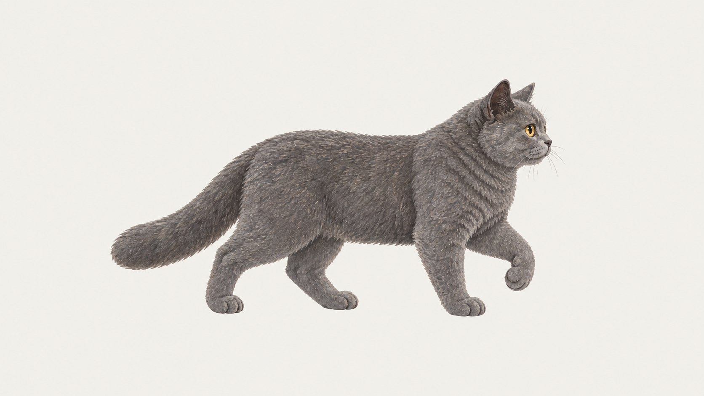

第一组 · 原地向右步行
首尾锚点候选，等待造型评审与外部视频返片。当前没有生成视频。
首帧 = 尾帧 · 同一文件内容

两个PNG逐字节相同。固定机位、原地迈步；桌面位移由程序完成。循环末尾不额外定格。
第一轮生成设置
首尾帧分别上传 start.png 和 end.png；先试5秒、原生帧率、1080p（如支持）。首尾帧控制取决于具体模式；仅上传首图不等于锁定尾图。保留原始视频，返片后再选完整周期抽取30帧。
中文提示词
全套动作与衔接
已有眨眼／蜷睡30帧已作为过渡版替换；其他动作暂保留旧版，整体美术尚未达到要求。